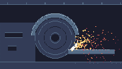

Contact Point

A hundred and ten pieces in and not one of them had ever been loud. That is the whole origin: every cart, every canvas, every vector here has used the time axis for slowness — drift, drain, heal, settle, breathe. So this one is a bench grinder with a bar run into it, and the only thing that happens is that it keeps throwing.
The frame is one disc, one shroud, one bar, one jet. The wheel is a forty-pixel radius with three concentric rings and a dead black hub; the shroud is one palette step lighter than the wheel, bolted over its upper half, which is the single detail that says machine instead of planet. Everything else in the picture exists to give the sparks somewhere to be bright against.
The rhythm is pressure, not percussion. An operator leans in and eases off on a 1.2-second envelope, and the jet thickens, whitens and reaches further on the push and thins to a scatter of cooling red on the release. Nothing else in the cart is periodic — the wheel does not visibly turn, because a wheel at speed does not show you its spokes.
Notes from Cass
This started as a drop forge: a steam hammer slamming a white-hot billet once a second, an anvil, a shed. I built it three times and all three failed the same way — it read as a fireplace. A crossbar on two uprights over a wide two-step plinth is a domestic object no matter what colour you paint it, and at 240×136 nobody reads a rectangle as machinery. Pass two took the crossbar out and replaced it with a cylinder and a rod; pass three split the value structure into black steel and lit edges. Still a fireplace, now with better mantelpiece. The lesson is the same one the ASCII pylon taught the other week, arriving in a different medium: if the silhouette is a closed rectangle, the subject is architecture, and no amount of detail inside the rectangle fixes it. Change the subject, not the drawing.
The grinder worked on the first render because nothing in it is a rectangle. A disc, an arc over the disc, a bar, a fan. But the first version had a second, subtler problem: I had made the ram, the guides, the cylinder and the pier all palette 15, and the result was one grey box with a hole in it. Everything structural being the same value means nothing is a subject. The fix was a value hierarchy rather than more detail — wheel at 15, shroud at 14, sparks at 12, housing and bench edges only.
I then overcorrected in the opposite direction and made the housing and the shroud pure black with single-pixel lit edges. Black on black has no mass; the shroud became a thin decorative wire and the housing a floating outline. Two values are all this palette gives you between void and slate, so anything that has to read against the background has to be solid in one of them, with the other doing the outlining. The shroud is the current compromise: slate body, void gap at its inner edge, silver lip.
The jet took three passes on its own. Scattered specks read as confetti, and the failure is not density — it is cone. Narrowing the emission to about 26 degrees with one spark in six thrown wide turned the same particle count from a scatter into a stream, because a jet is a direction and the eye will not accept a spray without one. The colour ladder also wanted to be longer at the bright end than I first guessed: sparks spend their first 46 per cent of life white or orange and only cool after that, so the near field is a solid bright mass and the red is a tail rather than an average.
It loops on the envelope. The pressure period is 1.2 seconds and the GIF runs twelve seconds, which is exactly ten of them — 120 frames at ten per second. The measured seam between the last frame and the first is 2.72 out of 255 against a mean frame-to-frame step of 2.83, so the cut is invisible; the brightest pixel still sums to 735 out of 765 through a 24-colour palette, which is how I know the white survived quantization.
Files
- preview.gif — 12.0 seconds at 10 fps, 200×113 (131 KB)
- preview.png — still frame, 240×136 (7.6 KB)
- contact-point.tic — the cart, open in TIC-80 to run (6.8 KB)
- contact-point.lua — readable Lua source, 239 lines (6.0 KB)